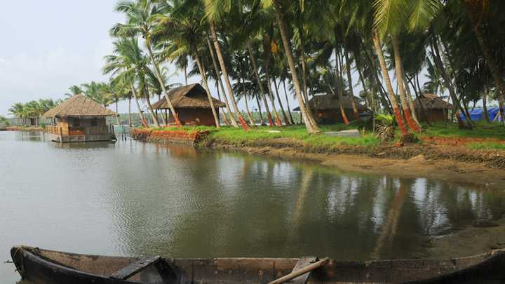
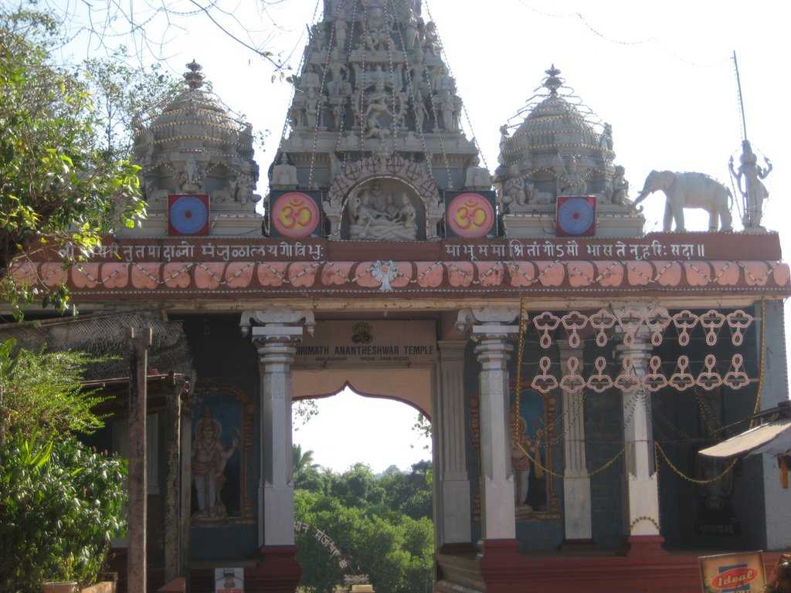

The land of seven languages
Kasaragod formerly known in English as Kassergode, and Malayalam as Kanhirakode, is a municipal town and administrative headquarters of Kasaragod district of Kerala state in India. Established in the year 1966, Kasaragod was the first municipal town in Kasaragod district.
Top Destinations

Ranipuram
The gentle hills of Ranipuram in Kerala are famous for its trekking trail. Situated at the height of about 750 meters above sea level, this destination has thick forest vegetation and lush green grasslands.
Malom Wildlife Sanctuary
A popular tourist attraction of Kanhagad region, Malom Wildlife Sanctuary is all about lush green tropical green forest and variety of wildlife.

Ananthapura Lake temple
The temple is situated in Kasargod district of Kerala and is connected to Sri Anantha Padmanabha Temple ,Trivandrum. It's a lovely temple surrounded by a lake. It is heard by the local people that there is a crocodile in this lake which protects the temple.

Parappa Wildlife Sanctuary
Kasargod is a place which is blessed with nature's beauty and tranquility. Parappa Wildlife Sanctuary is one such place which offers both. It also offers natural habitation to many wildlife creatures such as turtle, porcupine, pig, Malabar Hornbill, slender loris and jungle cat.

Cheruvathur
Cheruvathur is a popular picnic spot which is famous for poets and scholars of Kuttamath family. One can also witness the shadows of past in form of 18th century Dutch Fort on the Veermala Hills located in the area.

Nileshwar
Nileshwar is the cultural capital town of Kasaragod district. It is also spelled as Nileswaram by the local people.It lies between two rivers: Nileshwaram puzha and Thejaswini puzha. The Arabian Sea is to the west. It is the third largest town in the Kasargod district.

Kareem's Forest Park
A paradise for nature lovers, scientists, biologists, environmentalist and students of Ayurveda, Kareem's Forest Park is believed to be the country's leading private sanctuary.

Valiyaparamba
There could not be better place to relax than the beautiful and serene backwater stretches of Kerala, God's own country. And Valiyaparamba is believed to be one of the most gorgeous backwaters located in the proximity to Bekal town.

Manjeshwar
A beautiful town famous for its cashew nuts and several pilgrimages, Manjeshwar houses about 15 mosques and plethora of temples. Lying on the southern banks of the Majeswar River at Bengara Manjeswar are two old Jain Bastis.

Kottancheri Hills
A site with beautiful trekking trails offering its visitors an adventurous activity, Kottancheri Hills is basically considered to be the extension of Ranipur Wildlife Sanctuary.